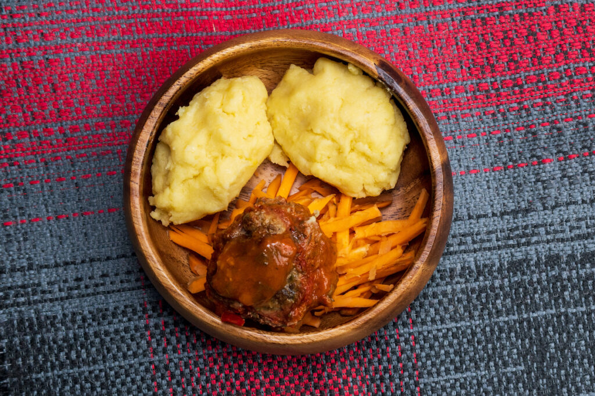

zambia is the country very well known for this meal,
it is so loved that it is even thier everyday food.
imagine a meal that you can eat like everyday.
"well thats how much it is loved."

INGREDIENTS
doesn't require alot i guess thats why its affordable everyday.
HOW TO COOK
- Pour about 3 ½ pints of water into a pot and bring it almost to a boil.
- Throw in four handfuls of maize meal.
- Stir vigorously with a wooden spoon, until the maize meal thoroughly mixes with the water.
- Let it thicken and wait for the mixture to start bubbling
- Cook for about 10 minutes on medium heat.
- Then add another four handfuls of maize meal while continuously stirring.
- When the mixture reaches its desired thickness, cover the pot and switch off the stove.
- After about two minutes, scoop it out and serve with beef or chicken.
back to top
main page